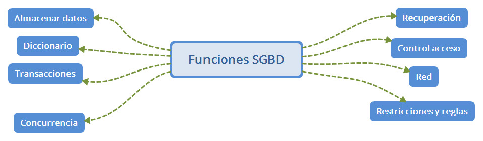

Tradicionalemente los sistemas de información de las empresas se componían de programs escritos en lenguajes de alto nivel (C, fortran, ...) que gestionaban información almacenada en ficheros, de forma que el programador esta el responsable de almacenar y recuperar la información. Esto supone varios problemas: Por un lado los programadores estan escribiendo una y otra vez código para realizar las mismas operaciones, y posiblemente no todos de una forma correcta. Además no estamos controlando si varios programas están accediendo a los ficherso de forma concurrente. El hecho de que un mismo fichero necesite ser abierto por varios programas, si tenemos que hacer un cambio en el fichero, por ejemplo para añadir un dato a los registros, esto nos obligará a reescribir todos los programas que utilizan ese fichero. Si para evitar estos problemas, cada aplicación tiene sus propios ficheros, entonces tenemos redundancia de datos, lo cual es un despilfarro de recursos, pero además puede suponer tener información inconsistente. Y además existen otros posibles problemas como recuperación frente a fallos, control de acceso a los datos, etc.
Por todo esto se buscó un nuevo enfoque, que se trató de independizar los datos de las aplicaciones que los utilizan, de modo que ningun cambio en la estructura de los datos afecte a los programas que los utilizan. De esta forma podemos definir una base de datos como un conjunto de datos interrelacionados y almacenados, que sirven a aplicaciones de la menor manera posible, pero manteniendo una independencia entre datos y programas. Las bases de datos han de dar a los usuarios (entendemos que un programa que la utilzia es un usuario) métodos para definir los datos que van a utilizar, para instroducir datos, para modificarlos y borrarlos. También buscan otro sservicios como control de acceso, recuperación ante fallos, acceso concurrente, rendimiendo óptimo, poder realizar operaciones atómicas.
Un Sistema Gestor de Bases de Datos es un conjunto de programas que permiten administrar y gestionar la información de una base de datos.
Llamamos LDM al lenguaje de manipulación de datos. Este lenguaje nos permite realizar consultas, insertar registros, eleminar, actulaizar. Sus instrucciones: INSERT DELETE UPDATE
El otro lenguaje es el LDD. El lenguaje de definición de datos. Sus sentencias: CREATE ALTER DROP TRUNCATE
Por último, tenemos un tercer lenguaje denominado LCD (Lenguaje de control de datos). Al igual que con el LDD, este lenguaje es utilizado por el administrador de bases de datos. contiene comandos para administrar el control de los usuarios que podrán hacer uso de la base de datos GRANT REVOKE
Edgar Frank Cood, el creador del modelo relacionar estableció una serie de servicios que debe cumplir todo Sistema Gestor de Bases de Datos:

Módulos del SGBD
El procesador de consultas es el componente principal. Transforma las consultas en instrucciones de bajo nivel que se dirigen al gestor de la base de datos.
Gestor de la base de datos. Es la interfaz entre los programas de aplicación y las consultas de los usuarios. Acepta consultas y examino los esquemas externo y conceptual para determinar que registros re requieren para satisfacer la petición. Entonces el gestor de base de datos realizar una llamada al gestor de archivos para ejecutar la petición.
Gestor de archivos. Maneja los archivos en disco, donde se almacena la base de datos. No realiza la E/S de datos, sino que usa los métodos del Sistema Operativo.
Preprocesador LDM. Convierte las sentencias del lenguaje LDM a funciones estándar escritas en el lenguaje anfitrión.
Compilador LDD. Convierte las instrucciones LDD en el conjunto de datos que contienen metadatos. Estas tablas se almacenan en el diccionario de datos
Control de autorización. Este módulo comprueba que el usuario tiene los permisos necesarios para llevar a cabo la operación que solicita.
Procesador de comandos. Una vez que el sistema ha comprobado los permisos del usuario, se pasa el control al procesador de comandos.
Control de la integridad. Cuando una operación cambia los datos de la base de datos, este módulo debe comprobar que la operación a realizar satisface todas las restricciones de integridad necesarias.
Optimizador de consultas. Este módulo determina la estrategia óptima para la ejecución de las consultas.
Gestor de transacciones. Este módulo realiza el procesamiento de las transacciones.
Planificador (scheduler). Este módulo es el responsable de asegurar que las operaciones que se realizan concurrentemente sobre la base de datos tienen lugar sin conflictos.
Gestor de recuperación. Este módulo garantiza que la base de datos permanece en un estado consistente en caso de que se produzca algún fallo. -Gestor de buffers. Este módulo es el responsable de transferir los datos entre memoria principal y los dispositivos de almacenamiento secundario. A este módulo también se le denomina gestor de datos.
Podríamos considerar el origen en Nueva York, año 1884. Aquí Herman Hollerith fué el creador de la máquina autoática de tarjetas perforadas. En aquella época los censos se realizan ba mano, y este ingeniero creo una máquina tabuladora o censadora basada en tarjetas perforadas. Durante los isguietnes 60 años, nadie avanzó hasta que en 1950 se diera el siguiente paso con las cintas magnéticas. Estas constituyen un nuevo medio de soporte, y con ellas se empezó a automatizar por fin la información. En los años 60 las computadoras comenzan a bajar de precio, a popularizarse y aparecen los discos, que permiten consultar información sin saber la ubicación exacta de los datos. Fué aquí donde aparecen las verdaderas primeras bases de datos de red (CODASYL) y las bases de datos jerárquicas (IMS). En los 70 Codd habla sobre las bases de datos relacionales y poco más tarde Larry Ellison desarrolla la base de datos Oracle siguiendo los postulados de Codd. En los 80, las bases de datos relacionales logran posicionarse en el mercado, y aparece el lenguaje SQL que ya en los 90 se impone como el lengauje de referencia para trabajar con bases de datos. http://conocelahistoria.com/c-tecnologia/historia-de-la-base-de-datos/